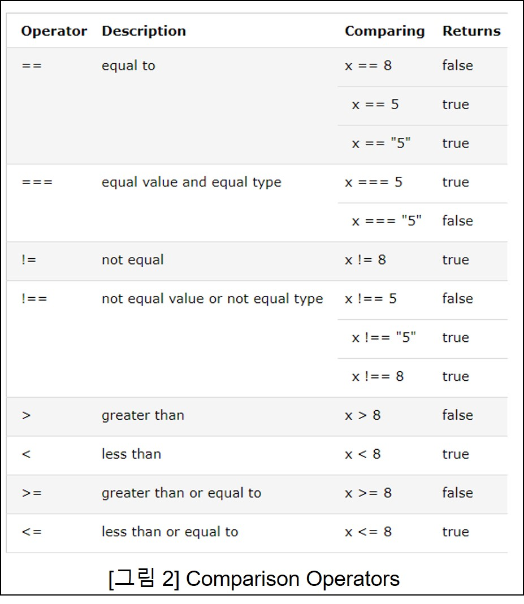

JavaScript(often abbreviated as JS) is a programming language
that is one of the core technologies of the World Wide Web, alongside HTML and CSS.
As of 2022, 98% of websites use JavaScript on the client side for webpage behavior,
often incorporating third-party libraries.
All major web browsers have a dedicated JavaScript engine to execute
the code on users' devices.
JavaScript is a high-level, often just-in-time compiled language
that conforms to the ECMAScript standard.
It has dynamic typing, prototype-based object-orientation,
and first-class functions.
It is multi-paradigm, supporting event-driven, functional,
and imperative programming styles.
It has application programming interfaces (APIs) for working
with text, dates, regular expressions, standard data structures,
and the Document Object Model (DOM).
0.JS란 무엇인가?
1. JS와 Web
1) HTML to define the content of web pages
2) CSS to specify the layput of web pages
3) JavaScript to program the behavior of web pages
2.JS의 역할
1) can change HTML content
2) can change HTML Attribute Value
3) can change HTML style (CSS)
4) can hide/show HTML elements
* 참고로 JavaScript(JS)와 Java는 서로 완전히 다른 언어입니다
I-1. HTML과 JS의 만남 : Script 태그
1. <script></script> 태그
1) JS를 쓰기 위해서 사용하는 태그
2) head section, body section 둘다 사용 가능
2. JS와 HTML의 차이
1) HTML은 contents 그대로 화면에 출력된다
2) JS은 논리적으로 계산이 가능한다
I-2. HTML과 JS의 만남 : 이벤트
- HTML event가 발생하면 => JavaSccript가 반응(react)
1. HTML events
1) HTML 웹페이지 로딩이 끝나자마자
2) HTML 입력란이 변화되자마자
3) HTML button이 클릭되자마자
2. JavaScript Reaction
- JS code를 이용하여 다양한 명령을 내릴 수 있다.
- 내용을 바꾼다거나, CSS를 변화한다거나 등등
1) 문자 또는 문자의 나열
2) quote(single, double 상관없다) 안에 문자를 쓴다
- "문자", '문자'
3) 같은 따옴표가 아니라면 따옴표 내에 다른 따옴표 쓸수 있다
- '이 문장은 "문자열"입니다'
- "이 문장에는 '작은 따옴표'를 쓸수 있습니다."
4. 대표적 자료형(2) : Number
1) JS는 모든 수를 십진법으로 나타냄.
2) 소수점을 포함해도 되고, 그렇지 않아도 된다.
- 34.00 , 34 등등
3) 지수 표시 ( e )
- 123e5 = 12300000
- 123e-3=0.123 (*중요: 소수점은 일반 지수처럼 계산되는 게 아니라, e-3은 총 소수점자리수가 3개라는 뜻)
4-1 Biglint
- 특수한 수 자료형으로, 기존의 Number는 32-bit 타입이라서 너무나 큰 수를 표현할 수 없다.
그래서 더 큰수를 표현하기 위해 64-bit 타입의 datatype이다. (ex. 12345678734320000000 )
*** 중요 ***
문자와 숫자를 더할 경우, 무조건 앞에서부터 계산한다.
- 16 + "Volvo" ; ==> 16Volvo
- "Volvo" + 16 ; ==> Volvo16
- 16 + 4 + "Volvo"; ==> 20Volvo
- "Volvo" + 16 + 4; ==> Volvo164
5. 대표적 자료형(3) : Boolean
1) True, False 두가지의 값만 가지는 자료형
2) 5 == 6 ==> False
3) 조건문에서 많이 사용
6. 대표적 자료형(4) : Arrays
1) 여러 자료의 배열을 표현
2) 대괄호[ ] 안에 콤마(,)로 나열한다
3) cars = ["Saab", "Volvo", "BMW" ]
7. 대표적 자료형(5) : Objects
1) 한국말로 '객체' - 객체라는 말은 어떤 행위가 미치는 대상을 의미
2) 객체를 지정해놓으면, 나중에 편리하게 꺼내 쓸 수있다.
3) object_name = {property1:value1, property2:value };
8. 그 외 자료형(1) : Undefined
- value값이 정의되지 않은(undefined) 자료형
9. 그 외 자료형(2) : null
- 자료형은 정해져있지만 값이 없는것
10. 그 외 자료형(3) : date
- 날짜를 나타내는 자료형
11. typeof Operator
- typeof : 그 자료형이 어떤 형인지 알수 있는 script 명령어
- typeof "cars" ==> string
III. 변수와 연산자
1. 변수(variable, var) : 변할수 있는 값.
2. 대입연산자 : = , 흔히 등호로 알고 있는 연산자.
X = "test" ==> 이 말은 좌항의 변수(x)에 우항의 문자열(test)을 대입한다는 뜻.
=> 1개 또는 여러개(콤마로 구분)의 Selector를 지정해서
그 Selector를 가진 모든 Element가 *NodeList로 return
3. getElementById(" ID " )
getElementsByClassName(" Class " )
getElementsByTagName(" Tag " )
=> 1개의 name, class, id 로 지정해서 그 Selector를 가진 모든 Elements를
*HTML Collection으로 return
VI. Program & Programming.
1.Program의 본질적 의미
- 근대 이전의 유럽에서 오페라,연극과 같은 문화예술공연에서 진행 목록이나 순서를 의미하는 말로 쓰임
- 즉, 계획된(ordered), 일련의(a series of) 의 의미가 내포되어 있음
- 컴퓨터 Program은 어떤 문제를 해결하기 위해 그 처리 방법과 순서를 기술한 일련의 명령어 집합체
2. HTML과 JS
- HTML은 단순히 웹에 표현하는 서술적인 언어이므로 program이 아니다
- JavaScript(JS)는 일정한 조건과 규칙에 맞게 순서대로 실행되는 언어이므로 Prgramming Language이다
- 두 개의 값의 상대적인 크기를 판단하여 참(True), 거짓(False)를 판단하는 연산자
- 두 개의 값을 비교하므로, 이항연산자이다

2. Boolean(불리언)
- 참(True) 또는 거짓(False)의 값만을 가지는 자료형
- 항상 False인 경우 : 0,-0, empty, null, undefined, False
VIII. 조건문
1. Conditional Statements(조건문) - if, else
- 특정한 조건이 참일 경우와 거짓일 경우 각각 실행되는 명령이 다르게 하는 것
1) if statement
- if( 조건 ) { 조건이 참일 경우 실행되는 명령 }
2) if-else statement
- if( 조건 ) { 조건이 참일 경우 실행되는 명령 }
else { 조건이 거짓일 경우 실행되는 명령 }
3) if-else-if statement
- if( 조건1 ) { 조건1이 참일 경우 실행되는 명령 }
else if ( 조건2 ) { 조건1일 거짓, 조건2가 참일 경우 실행되는 명령 }
else { 조건1, 조건2 모두 거짓일 때 실행되는 명령 }
2. 조건문의 활용 - toggle 버튼 만들기
IX. 리팩토링 - 중복의 제거
1. Refactoring(리팩토링)
- 결과의 변경 없이 코드의 구조를 재조정함
- 중복 제거, 가독성 향상, 유지보수 편의성 향상 등을 목적으로 함
2. 예시
1) 자기 자신 태그를 의미할 경우 => this 사용
2) 반복되는 것 : 변수 지정해서 사용
X. 배열(Array)
1. 배열(Array) - 여러 개의 값들의 수납함. 값들의 집합
- 배열을 구성하는 각각의 값을 배열요소(element)라고 한다
- index(인덱스) : 요소의 위치를 나타내는 값으로 첫번째 요소의 인덱스는 0이다. 순차적으로 1씩 증가한다.
1) Create an Array
- var 배열명 = [ 배열요소1, 배열요소2, 배열요소3, ... ]
2) change an Array
- 배열명[2] = 배열요소4 ==> 3번째 요소의 값을 배열요소4 로..
3) Add an Array
- 배열명.push(배열요소5); ==> 가장 마지막에 배열요소5를 추가
1) 반복되는 값을 배열로 만들어 배열요소를 반복해서 사용
2) 배열 요소 개수(length)만큼 반복해서 요소를 나열할 수 있다
3. 배열과 반복문 활용
- Night_Day toggle 버튼 전환시 특정 태그의 폰트 칼라를 바꿀 수 있다.
*예시)
var h2list = document.querySelectorAll('h2');
var i = 0
while ( i < h2list.length )
{ h2list[i].style.color = 'yellowgreen';
i = i + 1; }
===> h2 태그를 가진 요소들을 *NodeList로 return
후, 인덱스 번호를 반복적으로 증가시키면서 각 배열요소(h2태그요소)에게 style 적용하는 방식
XII. 함수(function)
1.정의
1) 특정한 작업을 수행하기 위해 작성된 코드들의 블록
2) 함수는 invocation(call) 호출될 때 수행한다
3) 반복되는 코드를 한번만 정의한 후 함수를 이용해서 여러번 사용할 수 있게 하는 장점이 있다
4) 같은 함수에 다양한 argument를 대입하여 다양한 결과를 얻을 수 있다
2.syntax
1) function Declaration
function function_name ( parameter1, parameter2, ...){ code to be executed }
- 키워드인 function 으로 시작
- 함수 이름 : 임의로 설정. 문자, 숫자, _, $ 을 사용가능
- ( )안에 쉼표로 구분되는 매개변수(parameter) : 임의로 설정
- { }로 둘러싸인 실행코드
2) function Expression
const x = function ( parameter1, parameter2, ...){code to be executed }
- 이름없는 함수로 알려짐(anonymous function)
- variable(여기서는 x)에 저장되어.. x(,)가 함수 역할을 함
3. parameter(매개변수)와 argument(인수)
1) 매개변수(parameter) : 입력한 인수를 함수로 전달하기(매개)하기 위해 사용하는 변수
2) 인수(argument) : 함수가 호출될 때 함수로 전달되는 매개변수의 실제 값
4. return keyword
1) { } 안에 쓰여지는 keyword
2) 코드 실행한 실행값을 결과값을 반환한다는 의미
3) return문에 다 다르면, 더 이상 실행을 멈춘다
4) 예시
- function test_func( a , b ) {
return a * b ; }
5. 함수의 활용
1) Night-Day Mode Toggle 에서 실행명령어를 함수화 하여 한번 지정한 후, 여러번 반복해서 사용가능케 함
XIII. 객체(Object)
1. 객체의 필요성
- 중복 제거, 정리 정도의 수단으로서 함수보다도 더 뛰어난 정리 정돈의 수단
- 연관된 다양한 변수들과 연관된 함수들의 그룹, 수납상자,Container 라고 생각
2. 객체 쓰기
1) 객체 생성 - 객체 리터럴(object literal) 사용
- 사람이 이해할 수 있는 문자나 약속의 기호를 사용해 값을 생성하는 표기법을 리터럴이라고 하고 객체 리터럴은 객체 생성법을 의미한다.
- 객체 리터럴 : objectName = { };
- 생성문법
const objectName = { key1:value1, key2:value2, key3:value3 }
Property = > key:value (property는 key와 value로 구성)
3. 객체 읽기(accessing the object property)
1) accessing opertator로 dot(.)를 이용하는 방법
: objectName.key;
2) accessing operator로 bracket( [ ] )를 이용하는 방법
: objectName["key"]; => 반드시 key 에 " " 를 붙인다
4. 객체 property 추가 및 삭제
1) 추가
- 읽기 와 같은 방식으로 . 이나 [ ] 를 사용한다
- objectName.key4="value4"
- objectName["key5"] = "value5"
2) 삭제
- delete objectName.key4;
- delete objectName["key4"];
3) property 존재 여부 확인
- 'key' in objectName;
5. 객체와 반복문
1) for ... in 반복문
- for ( let 변수 in objectName )
{ 샐행할 코드 } ;
=> 객체의 Property의 key가 순차적으로 한번식 return되어 { } 안의 코드 대로 실행된다.
6. 객체의 Methos와 this
1) 정의 : 객체의 property로 할당된 function을 method라고 한다.
2) Method 설정 방법
- 객체의 property를 작성하는 자리에 함수를 선언하면 된다
- const objectName = { key1:value1, key2:value2, key3:value3,
functionName : function( ) { 실행할 코드 }, }
- 또 다른 방법 : functionName( ) { 실행할 코드 }
3) this : metod 내의 지역 변수로서 객체 자신을 가리킨다.
- const objectName = { key1:value1, key2:value2, key3:value3,
functionName : function( ) { return objectName.key1 }, }
=> functionName : function( ) { return this.key1 }, } 으로 바꿔서 표기하면, this 는 이 객체인 objectName을 가리킨다.
7. 객체의 활용
1) Night-Day Mode Toggle 에서 Body를 객체화하여 SetColor 함수와 SetBackgroundColor 함수를 객체의 Method로 지정.
=> Body.SetColor( )
=> Body.SetBackgroundColor( )
2) Night-Day Mode Toggle 에서 H2를 객체화 하여 SetColor 함수를 객체의 Method로 지정.
=> H2.SetColor( )
XIV. SCript 코드 파일
1. JavaScript 코드의 작성 위치
1) HTML 태그의 이벤트 속성에 작성
- onclick =" Javascript 코드 "
2) <Script> 태그 내에 작성
- <Script> 시작태그와 종료 태그 사이에 코드 작성
- <Script> 태그는 웹 문서 어디든 위치할 수 있음
3) JavaScript 파일에 작성
- JavaScript 코드를 따로 파일로 작성한 후, 파일명을 *.js로 한다.
- 웹 문서에 링크할 때는 <Script> 태그의 src속성으로 첨부
<Script> src =" *.js "></Script>
XV. Library vs Framework
1. Library
1) 소프트웨어를 개발할 때 단순 활용 가능한 도구들의 집합.
특정 기능을 모아둔 코드, 함수들의 집합.
2) 개발자가 주도성을 가지고 제어를 하며, 능동적으로 라이브러리를 호출해서 사용한다.
3) 종류 : jQuery, React.js 등등
2. Framework
1) 소프트웨어 개발 시 필수적인 코드, 알고리즘, DB 연동과 같은 기능을 위해 뼈대(구조)를 제공하며, 이러한 뼈대를 바탕으로 개발자가 살을 붙이는 작업을 한다.
2) 프레임워크 틀에 이미 제어의 흐름이 있어서, 개발자가 들어가서 사용한다는 느낌으로 접근한다.
3) 종류 : Vue.js, Angular, Django, Flask 등
XVI. UI vs API
1. UI(User Interface)
- 사용자(사람)과 컴퓨터 사이의 의사 소통을 할 수 있도록 하는 상호 작용 시스템. 입력, 출력, 삭제 등과 같은 행위를 위해 필요한 시스템
2. API(Application Programming Interface)
- 응용프로그램(App)에서 사용할 수 있도록, 운영 체제나 프로그래밍 언어가 제공하는 기능을 제어할 수 있게 만든 인터페이스
XVII. 기타 참고 개념
1. 공부는 꾸준히 조금씩 하는 것이지만 프로젝트는 당장 시작해라
2. 프로젝트를 시작할 시 완벽하게 하려고 하지마라
3. 기본적인 도구만을 이용해서 프로그래밍의 기본 원칙(순서대로 짜여진 대로 실행되는 것)만 지키면 된다
4. 문제에 봉착할 때면 조금씩 공부하고 찾아보고 하면서 업그레이드하면 된다
5. 추천 검색 및 팁
1) document 객체 공부 더 하기 - 태그 추가, 태그 삭제 등
=> DOM(Document Object Model)
2) window 객체 공부 더 하기 - 웹브라우저 제어 하기 ( 현재 웹페이지 주소 알기, 새창열기, 화면 크기 )
3) ajax - 웹페이지 정보 변경하기. 현대적인 웹앱 개발 필수 도구
4) cookie - 웹페이지 현재상태 유지 도구. 사용자 개인 서비스 제공
5) offline web application - 인터넷 없이 동작하는 웹 개발
6) webRTC - 화상통신 웹앱 도구
7) speech api - 사용자의 음성 인식, 음성 정보 제공 도구
8) webGL - 3차원 그래픽 게임 개발 도구
9) webVR - 가상 현실 개발 도구